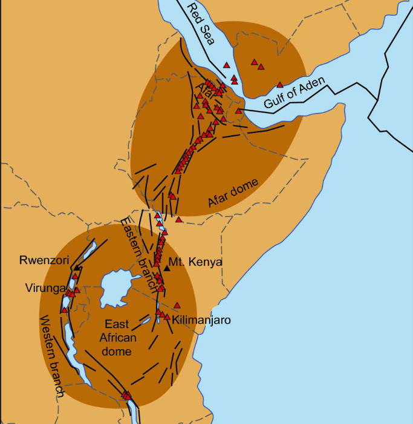
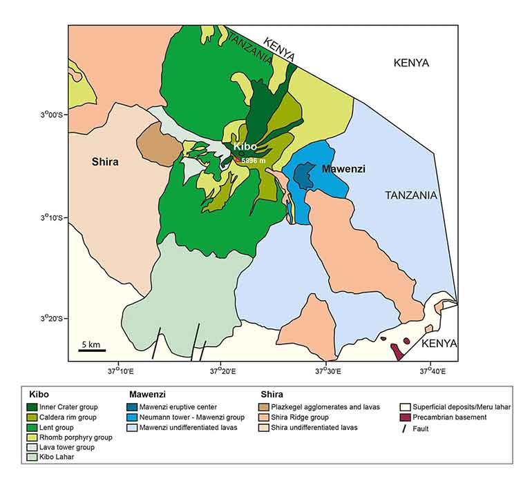
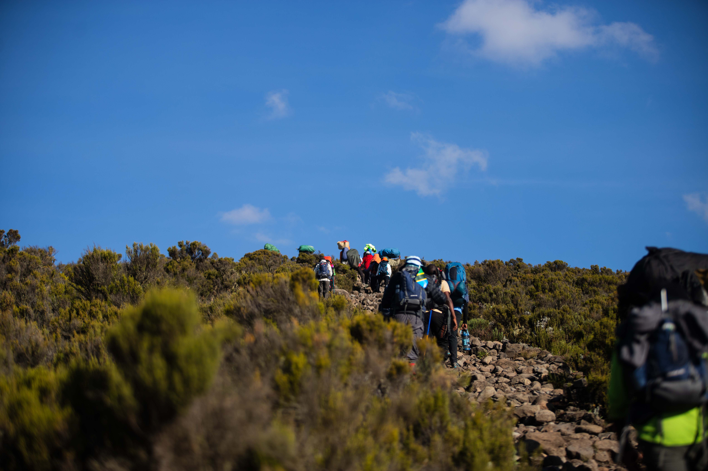
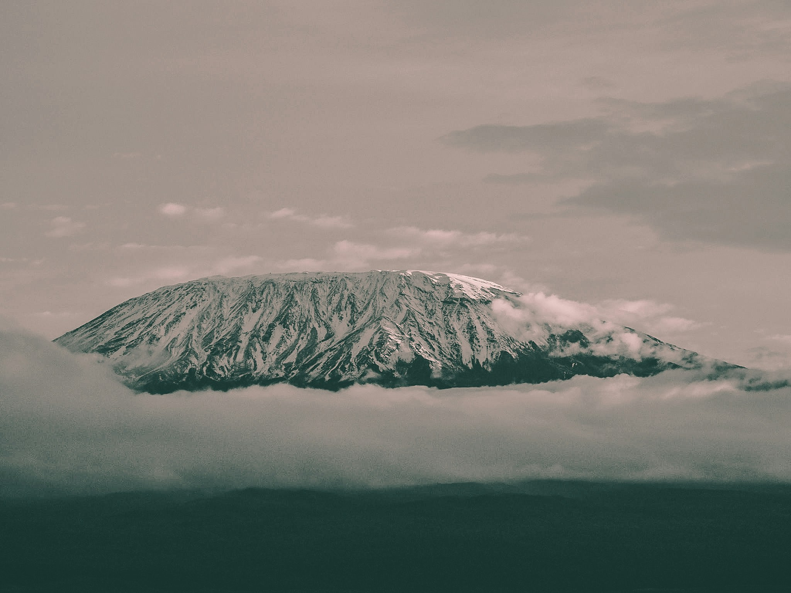

Africa's Giant
Kilimanjaro is a large, dormant volcano that stands alone, looking across the Tanzanian and Kenyan plains and residing as the highest mountain in Africa. Rising from the concentrated volcanism in the East African Rift, the stratovolcano sits on top of a rifting African tectonic plate. Unlike the Himalayas, which were formed by the collision of two continental plates, Kilimanjaro's formation is attributed to hotspot volcanism, which sees the volcano rise to neary 4,900 metres (19,341 feet), above sea level.

Hotspot Activity
Across the East African Rift, the thinner, stretched lithosphere is forced upwards by a mantle plume. As a result, the brittle crust fractures and the fissures are penetrated by large floods of basaltic lava sourced from decompression melting of the mantle. This has resulted in extensive thick basaltic flood deposits dominating the landscape.
The volcano is composed of three separate volcanic cones: Kibo, Mawenzi and Shira. Whilst Mawenzi and Shira are classified as extinct, Kibo (the highest cone) is dormant with the potential to erupt again.
Uhuru Peak is the tallest point of Kilimanjaro, and the highest point in all of Africa, listed at 5,895 metres elevation. Kilimanjaro’s volcanism is estimated to have begun between 2.5 and 1 million years ago, beginning with the Shira volcanic cone. The most recent major eruption however was over 150,000 years ago, giving the mountain its dormant status.

Glaciers... In Africa?
Stunningly, the hottest continent in the world still hosts a set of glaciers and ice fields due to the extreme height of Kilimanjaro. The largest of these ice bodies is known as the Northern Ice Field.
Previously, the summit of Kilimanjaro was covered by one singular ice cap known as the ‘Furtwangler Glacier’, however severe recession and melting has meant the remaining ice has been split into several distinct bodies.
The ice cap has been retreating rapidly since the late 19th century, with the Northern Ice Field losing over 80% of its volume since 1912. This is a result of both climate change and sublimation, where ice is lost directly to the atmosphere without even melting into water first. The ice fields are also highly sensitive to changes in precipitation, which is why they are so vulnerable to climate change.
East African Rift
Kilimanjaro is located in the East African Rift, a tectonic plate boundary where the African Plate is being pulled apart. This rifting process has created a series of faults and fractures in the crust, allowing magma to rise to the surface and form volcanoes like Kilimanjaro. The rift is also responsible for the formation of the Great Lakes of Africa and has influenced the region's topography and climate.
The rift is an active geological feature, and its ongoing activity continues to shape and dictate the landscape of the region. Volcanoes such as Nyiragongo as well as those within the Afar Triangle are among the most active in the world, and their eruptions can have significant impacts on local communities and ecosystems. Geologists and volcanologists study the processes that drive rifting and volcanism in this region.
Kilimanjaro's location within this rift zone makes it a key site for studying the interactions between tectonics, volcanism, and climate in East Africa.


Geohazards
When volcanoes erupt, they can produce a range of hazards, including lava flows, ashfall, pyroclastic flows, and lahars. While Kilimanjaro is currently dormant, it is important to monitor the volcano for any signs of renewed activity. The potential hazards associated with an eruption could have significant impacts on local communities and ecosystems.
In other areas fueled by the divergence of the African Rift, similar geological processes can lead to volcanic activity and associated hazards. Mount Nyragongo in the Democratic Republic of Congo is another example of a volcano driven by the same forces which formed Kilimanjaro. In 1977, Mount Nyragongo erupted, producing a fast-moving lava flow that destroyed the city of Goma and resulted in significant loss of life. This event highlights the potential volcanic dangers associated within the East African Rift region.

Tourism
Kilimanjaro is a popular destination for tourists and climbers from around the world. The mountain's unique ecosystems, stunning landscapes, and cultural significance make it an attractive location for adventure tourism.
The climb to the summit of Kilimanjaro is a challenging endeavor, requiring physical fitness, acclimatization to high altitudes, and careful planning. Despite the challenges, thousands of climbers attempt to reach the summit each year, contributing to the local economy and promoting cultural exchange.
The journey begins at the base of the mountain, where challengers traverse through a dry and arid savannah. The next stage of the climb takes adventurers through a lush rainforest, where they can experience the rich biodiversity of the region. As climbers ascend further, they encounter alpine meadows and eventually past the glacier to reach the summit, where they are rewarded with breathtaking views of the surrounding landscape.
To reach the top is an extremely challenging but equally rewarding experience. There is truly nowhere else on our planet that offers such a unique and unforgettable adventure.
“There are no happy faces above 15,000 feet."" — Barry Finlay, Kilimanjaro and Beyond - 2011

Kilimanjaro is a geological spectacle, representing the dynamic processes of hotspot volcanism and tectonic activity in East Africa. Its towering presence and unique features make it a significant subject of study for geologists and volcanologists alike.
The mountain's glaciers, despite being located in one of the hottest regions on Earth, provide critical insights into climate change and glacial dynamics.
Understanding Kilimanjaro's geological history and its associated hazards is essential for both scientific research and the safety of local communities. As we continue to monitor and study this iconic volcano, it remains a symbol of the Earth's ever-changing landscape and the powerful forces that shape our planet.